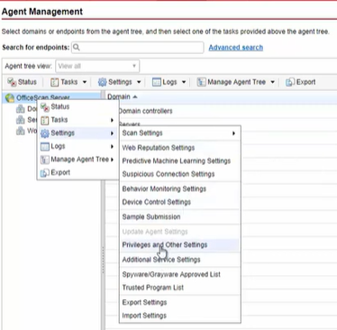

Migration to a new server
When and What to upgrade

-------------------------------------------------------------------------------------------------------------------------
Ir em cada dominio e fazer essa configuração de OffiScan para cada tipo de dominio.
Tem que esperar um pouco para que de certo